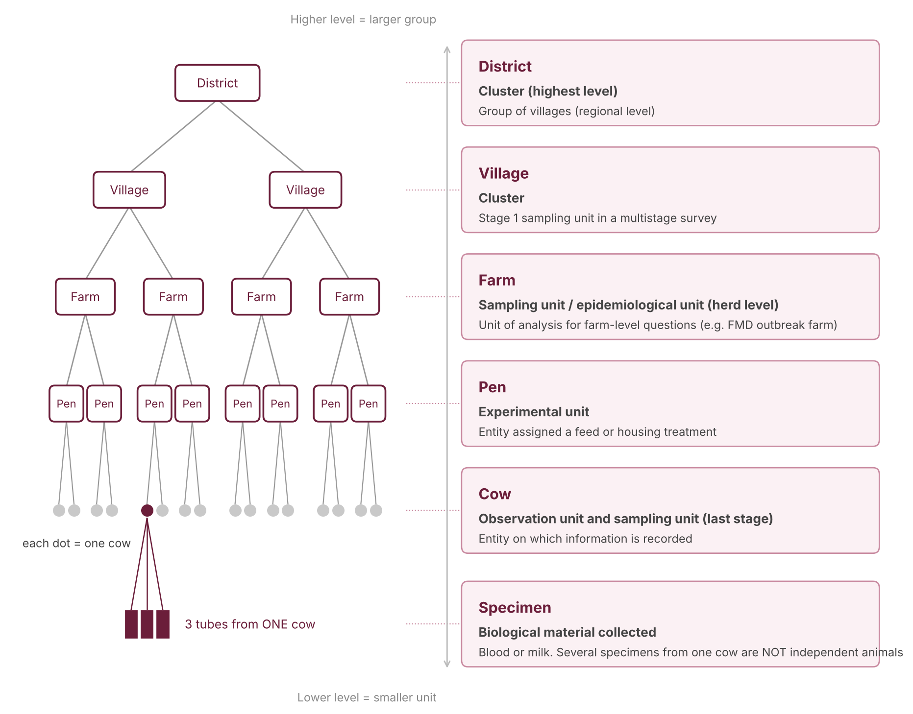

Step 4
4. Target population and sampling unit
Target population
The target population is the group of animals, farms or other units you want to draw conclusions about. Define it before you choose anything else, because it sets who can be sampled and to whom the results apply. Name the type of unit, the place and the time period.
ExamplesAll lactating dairy cows in District A in November 2026.
All dairy farms in three districts of Chiang Mai Province.
All dairy farms in three districts of Chiang Mai Province.
The sample is the part of the target population that you actually select and study.
Sampling unit: what exactly are we selecting?
Veterinary data are hierarchical. Cows live in herds; herds sit in villages; one cow can give many samples. You must keep the levels apart.
| Term | Meaning | Example |
|---|---|---|
| Sampling unit | Entity selected during sampling | Farm, cow or pen |
| Observation unit | Entity on which information is recorded | Individual cow |
| Specimen | Biological material collected | Blood or milk sample |
| Experimental unit | Entity independently assigned an intervention | Pen assigned a feed treatment |

Important teaching pointTen blood tubes from one cow are not ten independent animals. Similarly, 100 cows from one farm do not give the same information as 100 cows spread across many farms. Treating repeated or clustered measurements as independent is called pseudoreplication. It makes confidence intervals too narrow and p-values too small.